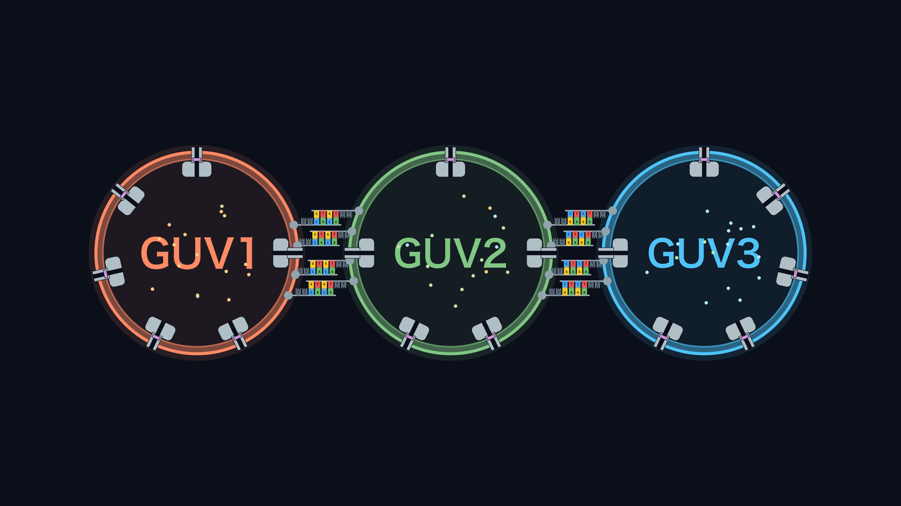

YOKABIO
Abstract

Cells do not work alone. Each cell connects to particular partners and exchanges materials with them. This communication is the basis of living systems.
Our project is ALiGN (Accurately Linkable GUV Network). We build a network of GUVs, small vesicles that resemble cells, and aim for controlled communication between GUVs. Each GUV connects with intended partners, in an intended number, and exchanges its contents only through these connections.
To control the connections, we place DNA strands on the GUV surface. The difference in sequences decides which GUVs connect to each other. The DNA density on the surface of each GUV and the strength of the DNA binding decide how many partners it takes. For material exchange, α-hemolysin opens pores in the membrane, and TRIMEB keeps the pores closed until two GUVs are connected.
By combining these pieces, we build an artificial network that reproduces a cell-to-cell network.